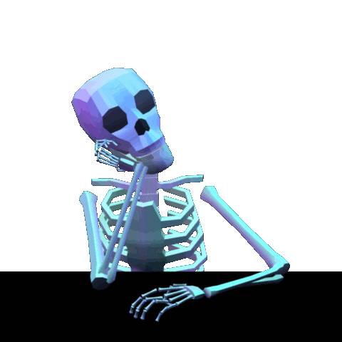

Inicio
Acerca de
Lo'Meme'
Funny 1
Funny 2
Funny 3
Funny 4
Funny 5
Redes Sociales
Login
Barras Laterales
El Sidebar o barra lateral es el espacio que está al lado del contenido de una página web (especialmente en un blog), puede estar colocado en diferentes zonas, aunque lo más habitual es encontrarlo o a la izquierda o a la derecha del contenido (normalmente a la derecha). Un ejemplo fácil, si miras este post en un ordenador, es la barra que ves a la derecha de estas líneas y que comienza conmigo haciendo como si trabajara en un ordenador (seguramente estaba perdiendo tiempo en Instagram o algo 🙂 ) La barra lateral se utiliza normalmente para potenciar algunas interacciones o destacar algunos elementos, mostrando estos elementos a la vista del usuario, como pueden ser un formulario de suscripción, las últimas entradas del blog, una imagen que enlace a algún producto o servicio que se venda en la web o cualquier cosa que nos interese destacar.
Info 1
Info 2
Info 3
Info 4
Info 5
